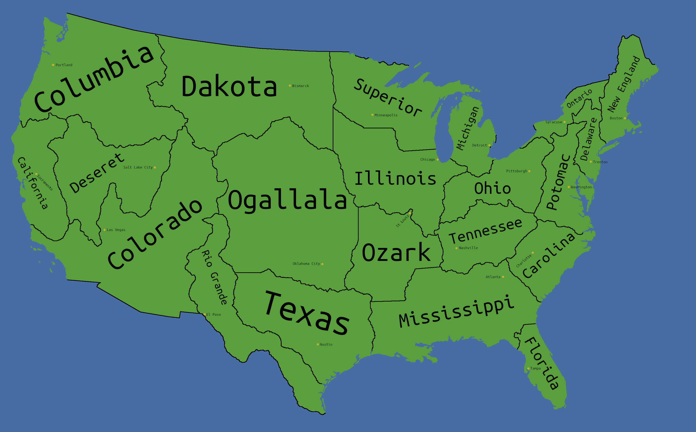

I redrew the United States' states!
The western states in particular are redrawn to be mindful of watersheds and water supply. Don't want states fighting over the Colorado river the way they are in our timeline.
The eastern states idk I was just playing.